2019年度 地球惑星環境科学科リモートセンシング・ GISおよび実習 （GIS回）
日程 2020/2/5, 6, 7
- 講義:10:00-12:00
- 実習:13:00-17:00
実習について
-
実習は、冒頭で概要と課題の簡単な説明をした後に、受講者が教材を参考に学習を進める形式で行います。実習ごとに、オンライン教材（GIS実習オープン教材）を用いて学習した後、指定された課題を行てください。
-
課題は、実習と対応した 地図の作成と設問 への回答です。1回の実習で3～5枚程度の地図の作成と提出が必要です。課題として作成した地図画像は、ファイルにまとめて
右クリック＞圧縮し、zipファイルにしたものをアンケートフォームより提出してください。 -
実習終了後、アンケートに回答してください。このアンケートの結果は、個人が特定できないように加工した後に、学習効果の評価や教材の改良等に利用します。課題の提出もアンケートフォームから行います。アンケートは、Googleフォームを利用するので、Googleアカウント（東大のメールアカウントに紐付けられたもの）を準備してください。
-
初回の実習以外は、空間座標を適切に変換した後、実習、課題の作成を行ってください。
-
各実習の詳細は、使用するデータとともに、各実習日に公開します。
-
実習を行う際には、以下の注意事項を確認したうえで、進めてください。
実習の注意事項
- ファイル名、出力先などに日本語が含まれているとエラーが起きる場合があります。
- デフォルトの設定（ディレクトリ）でデータを出力するとエラーが起きます。
- shapeファイルは、.shp,.shx,.dbf等の複数のファイルから構成されます。そのため、移動する際にはすべてを移動してください。.shpのみを移動したために、データが表示できないというミスが多いです。
- 初回の実習のみ、空間座標系の関係上、各教材や課題の終了後にQGISを一度閉じ（作業ファイルは任意の場所に保存）、再起動してから次の実習、課題を行ってください。
2019年度 地球惑星環境科学科リモートセンシング・ GISおよび実習 （GIS回）
2/5(水)：GIS入門
- QGIS入門
- 既存データの取得と変換
- ネットワーク分析(最短経路検索)
実習の注意事項
- ファイル名、出力先などに日本語が含まれているとエラーが起きる場合があります。
- デフォルトの設定（ディレクトリ）でデータを出力するとエラーが起きます。
- shapeファイルは、.shp,.shx,.dbf等の複数のファイルから構成されます。そのため、移動する際にはすべてを移動してください。.shpのみを移動したために、データが表示できないというミスが多いです。
- 初回の実習のみ、空間座標系の関係上、各教材や課題の終了後にQGISを一度閉じ（作業ファイルは任意の場所に保存）、再起動してから次の実習、課題を行ってください。
QGISビギナーズマニュアル
本教材は、QGIS入門者向けの実習用教材です。QGISを実際に操作しながら、空間データの表示、シンボルの変更、地図のレイアウト等を学習することができます。
Menu
実習用データ
実習をはじめる前に、tokyo.zipをダウンロードしてください。
QGISとは？
QGISは、無償で利用できるオープンソース（GNU General Public License v2で提供）のGISです。Windows,Mac,Linux,Unix, Androidなど様々な環境で動作します。様々なプラグインや、GRASSやPostGISなど他のオープンソースGISと連携して使用することで、多種類の分析が可能です。GISの基本操作に必要な機能を網羅しているだけでなく、Web上に多数のマニュアルがアップロードされているため、GISの学習がしやすいソフトウェアです。
http://qgis.org/ja/site/about/index.html を参考に作成
起動
デスクトップのQGISアイコンをダブルクリックする。しばらくするとQGISが起動する。

最初にQGIS3を起動した時には、下記の様に古いバージョンのGIS2からの設定を取り込むか聞かれることがある。この演習ではQGIS2とは関係なくQGIS3を利用するため、「QGIS 2の設定をインポートせずクリーンな状態でスタートする」を選択する。この設定は最初の1回のみで済む。 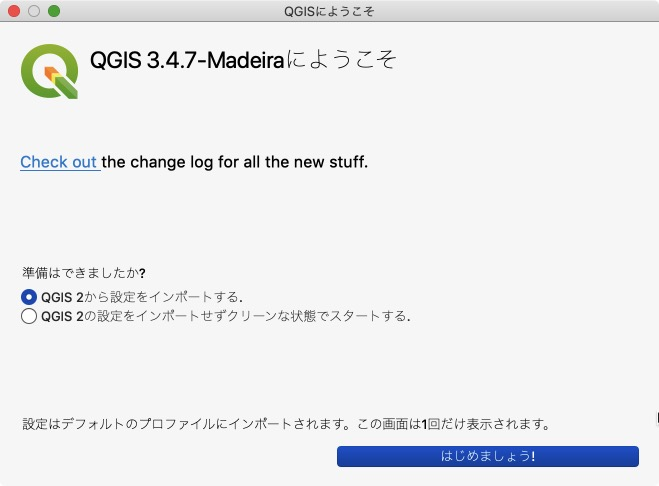
ウインドウ
QGISを起動すると、下の図のようなウィンドウが表示されます。ウインドウ上のアイコンの配置は自由に変更することができます。アイコンのない箇所（グレーの部分）で右クリックして出てくる「パネル」メニューからパネルを選択することにより、別機能のパネルを呼び出すことができます。アイコンの数は、インストールしているプラグインの数によっても異なります。そのため、インストール直後のQGISと教材の画像が異なっていることを確認してください。

各種ボタン
以下では、QGISで主に使用するボタンについて解説しています。

- QGISファイルを保存
- 名前をつけてQGISファイルを保存
- 地図移動
- 地図の拡大と縮小
- 選択領域にズーム
- 動作の前後移動
- 地物情報の表示
- 選択と選択取り消し
- 長さ、面積計測（手動）
- レイヤ編集
- レイヤの読み込み
また、ウィンドウの下部にはカーソルの座標や縮尺、拡大、回転、座標系などを確認できるツールバーがあります。

データの読み込み
GISでは、位置情報を保持するベクトルデータとラスタデータを用いて、空間分析等を行います。各データの特徴は、GISの基本概念_ベクトルデータとラスタデータを参照してください。以下では、代表的なデータ形式を取り上げ、それらをQGISで読み込む手法について解説します。教材中に記載されている使用データ(tokyo.zip)を用意してください。そして、tokyo.zipファイルをダウンロード後に解凍してください）。
ベクトルデータ読み込み
以下では、GISで扱う代表的なベクトルデータ形式のシェープファイルを読み込む手法について解説する。シェープファイルの特徴は、GISの基本概念_シェープファイルを参照してください。
データソースマネージャーを開くのアイコンをクリックし、ベクタのタブに切り替える。エンコーディングをUTF-8とし、ソースから、cvs_jgd2011_9.shpを指定する。追加をクリックするとデータが表示される。
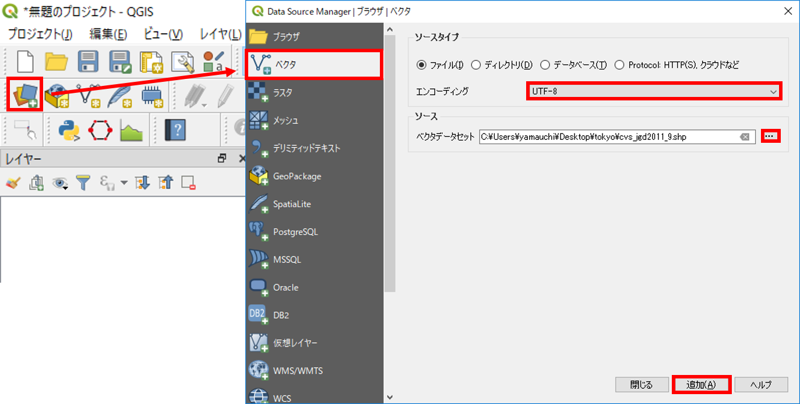

上記のように、cvs_jgd2011_9.shpを読み込むと、東京23区内のコンビニが表示される（ポイントデータ）。ベクトルデータには、ポイント、ライン、ポリゴンのデータ形式がある。ラインとポリゴンも同様の手法で読み込むことができる。
ライン
東京周辺の河川(river_9kei.shp)を表示する。

ポリゴン
東京23区のエリア(tokyo_23ku_jgd2011_9.shp)を表示する。 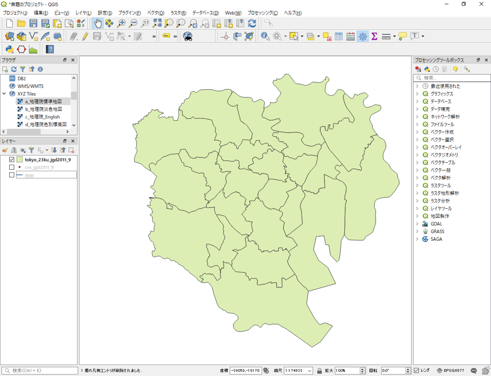
【註】ここまで続けてベクトルデータを読み込むと、ポイントの上にラインが被さり、さらにポリゴンのデータが被さって表示されます。これはレイヤーで後から読み込んだものが、一番上に表示されるためです。3つのデータがうまく表示されるように、レイヤーパネルでレイヤー名をドラッグしてレイヤー順番を変えます。委細については、後の「レイヤ構造」で説明します。
ラスタデータの読み込み
以下では、GISで扱う代表的なラスタデータ形式のGeotiffを読み込む手法について解説する。データソースマネージャーを開くのアイコンをクリックし、ラスタのタブに切り替える。ソースから、tokyo_srtm.tifを指定し追加をクリックする。
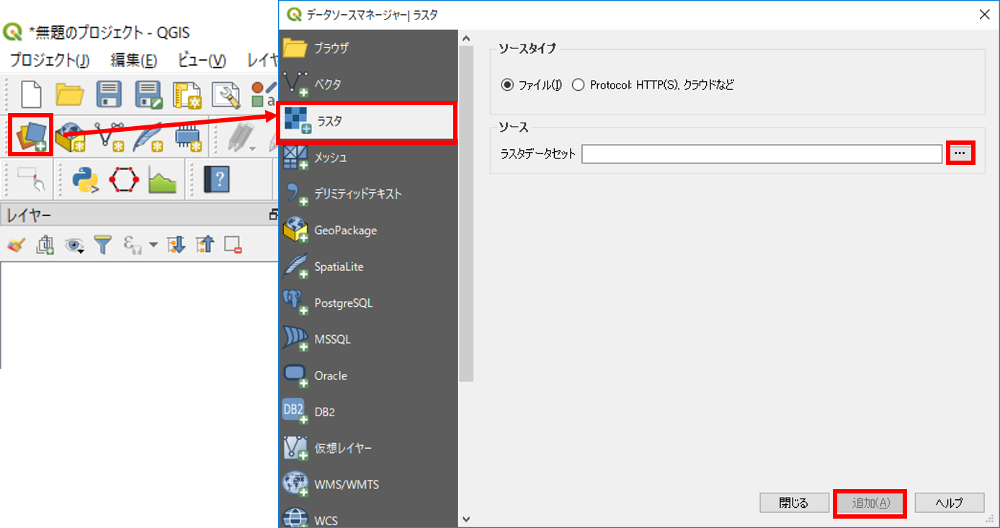

テキストデータ読み込み
以下では、GISで扱う代表的なテキストファイルであるCSV形式のデータを読み込む手法について解説する。データソースマネージャーを開くのアイコンをクリックし、デリミティッドテキストのタブに切り替える。ファイル名から、post_office.csvを指定する。X,Yフィールドに対応する緯度経度があれば指定し、緯度経度がなければジオメトリなしにチェックをする(ここでは、ジオメトリ定義＞ジオメトリなしにチェックを入れてください。)。

【註】本実習のCSVファイルはUTF-8エンコーディングで作成されています。GGIS3のデフォルトでのエンコーディング（レイヤ名の横で指定できます）はUTF-8になっていますのでこのままで結構です。ただ、Windowsで作成されるCSVファイルはShift-JIS形式で作成されていることが多いので、その場合はエンコーディング形式を「Shift-JIS」に選択する必要があります。エンコーディングが正しく設定されているかは、サンプルデータの表示が適切になされていることで確認することができます。
レイヤ構造
GISでは、レイヤ構造に従ってデータの切り替えや重ね合わせを行います。以下では、レイヤの切り替え、重ね合わせ、削除の手法を解説します。
レイヤ表示の切替
各レイヤの横にあるチェックボックスにチェックをいれると、地図表示画面にレイヤが表示される。 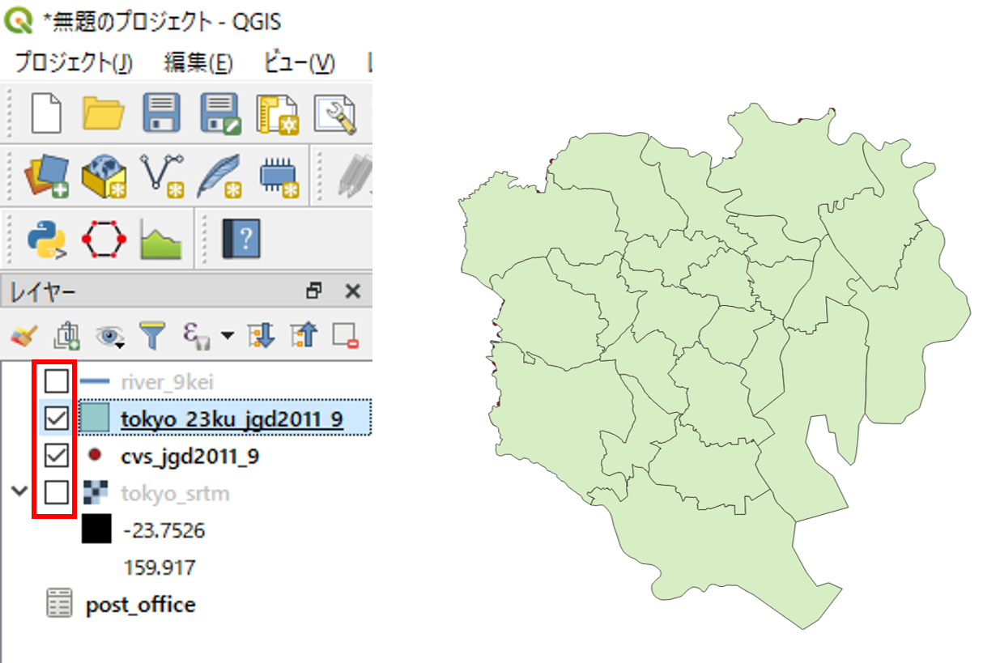
レイヤの重ね合わせ
レイヤウィンドウでレイヤを上下にずらすと、地図表示画面が連動して切り替わる。

レイヤの削除
レイヤウィンドウでレイヤの上で右クリックし、レイヤの削除をクリックする。この処理では、レイヤウィンドウ上からレイヤが消えるのみで、データそのものは削除されていない点に注意する。

機能説明
QGISには、地図のレイアウト、データの作成、分析など様々な機能があります。以下では、QGISの機能について説明しています。
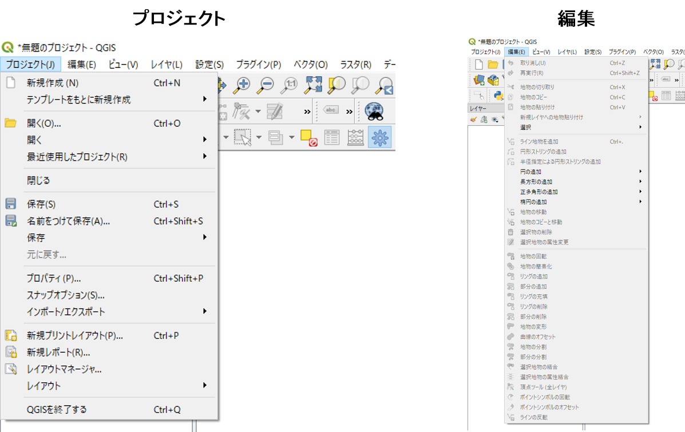 プロジェクト：QGIS（.qgs）ファイルの保存や読み込み、地図のレイアウト、エクスポートができる。
編集：ベクタレイヤの編集ができる。編集状態になると、アクティブになる。
 ビュー：地図の移動や拡大、縮小など、地図画面の操作ができる。
ビュー：地図の移動や拡大、縮小など、地図画面の操作ができる。
レイヤ：ベクタやラスタなどのレイヤが追加できる。
ポイント、ライン、ポリゴン新規レイヤの作成もできる。
 設定：オプションから、プロジェクトの設定やスナップオプションが設定できる。
設定：オプションから、プロジェクトの設定やスナップオプションが設定できる。
プラグイン：プラグインの管理とインストールができる。Python入力画面が開ける。
 ベクタ：バッファやクリップなどベクタに関する処理ができる。
ベクタ：バッファやクリップなどベクタに関する処理ができる。
ラスタ：斜面方位図や陰影図の作成などラスタに関する処理ができる。
 データベース：PostGISなどのデータベースへの接続やeVisプラグインによる外部ファイルとの連携が可能。
データベース：PostGISなどのデータベースへの接続やeVisプラグインによる外部ファイルとの連携が可能。
Web：背景地図の設定やweb地図の書き出しができる（プラグインによる）。
 プロッセッシング：他のGISソフトウェアと連携して操作ができる（R,GRASS,SAGAなどがQGIS内で処理できる）。
プロッセッシング：他のGISソフトウェアと連携して操作ができる（R,GRASS,SAGAなどがQGIS内で処理できる）。
ヘルプ：QGISのヘルプが確認できる。
属性テーブル
ベクトルデータは、複数の属性情報を保持することができます。以下では、QGISで属性情報を参照する手法について、解説しています。
以下では、cvs_jgd2011_9.shpのみ利用します。不要なレイヤを削除してください。
データを読み込み、レイヤウィンドウのレイヤの上で右クリックすると、属性テーブルを開くことができる。

属性テーブルで選択したものは、地図上で黄色で表示される。選択アイコンで地図上の地物を選択した場合は、その地物に対応する属性テーブルの行が選択される。 地図上の地物を選択した時に、そのままでは属性テーブルの中で全てのデータが表示され、選択したものがわかりにくい時がある。その時には属性テーブルの下部にあるポップアップメニューから「選択した地物を表示する」を選択し、選択された地物に関する属性だけが表示されるようにすることで見やすくなります。 なお、ポリゴンによる選択（選択ボタンの右側にある小さな三角を押すとポップアップメニューが表示され、ポリゴン、フリーハンド等が選択できます）は、右クリックで終了し、フリーハンドによる選択は左クリックで終了と、操作性に一貫がなく分かりにくい状態です。

プロパティ
QGISでは、レイヤごとにレイヤのプロパティから、データの表示情報やスタイルの変更ができます。ポイントでは形や大きさ、ラインでは線の形や太さ、ポリゴンでは塗りつぶしの色等を変更することができます。属性情報に応じて、スタイルを分けることもできます。これは、レイヤの表示が変化するのみの処理で、データそのものの形状は変更されません。
以下では、レイヤのプロパティについて解説し、ポイントデータのスタイルの変更を行います。
レイヤウインドウからプロパティを表示したいレイヤを選択し、右クリックからプロパティをクリックする。

ソース
座標系を確認したり、文字コード、表示名の変更がきます。

シンボロジー
データのスタイルを整えることができる機能です。データの値に応じて配色やスタイルを変えることができます。分類方法は「単一シンボル」、「分類された」、「段階に分けられた」等があります。
ここでは、ポイントデータの大きさと色を変更します。単一シンボルを選択し、色と大きさを指定する。指定できた状態でOKをクリックすると変更が適用される。
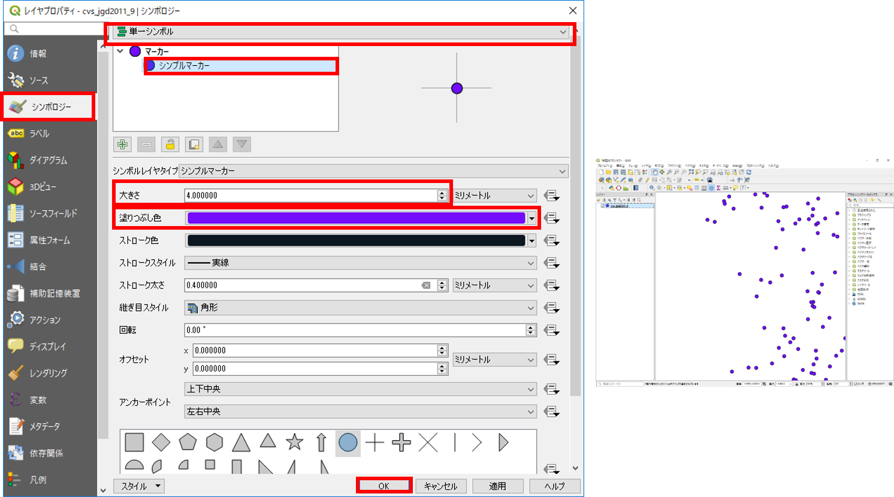
以下のように、形を変更することもできる。

属性テーブルの値によって、大きさと色を変更するには、シンボロジーの画面の一番上にあるポップアップメニューにおいて、分類されたを選択し、分類したいフィールドを選択する。
ここではコンビニごとに色を変更するため、「カラム」フィールドのポップアップメニューからname_enを選択する。この状態で、左下の「分類」ボタンをクリックすると、自動的にname_enの値による色分けが生成される。各色は、シンボルをダブルクリックすることで調整でき、凡例（ラベル）も変更できる。

最後に、不要な分類を選択し削除する。OKをクリックすると変更が適用される。
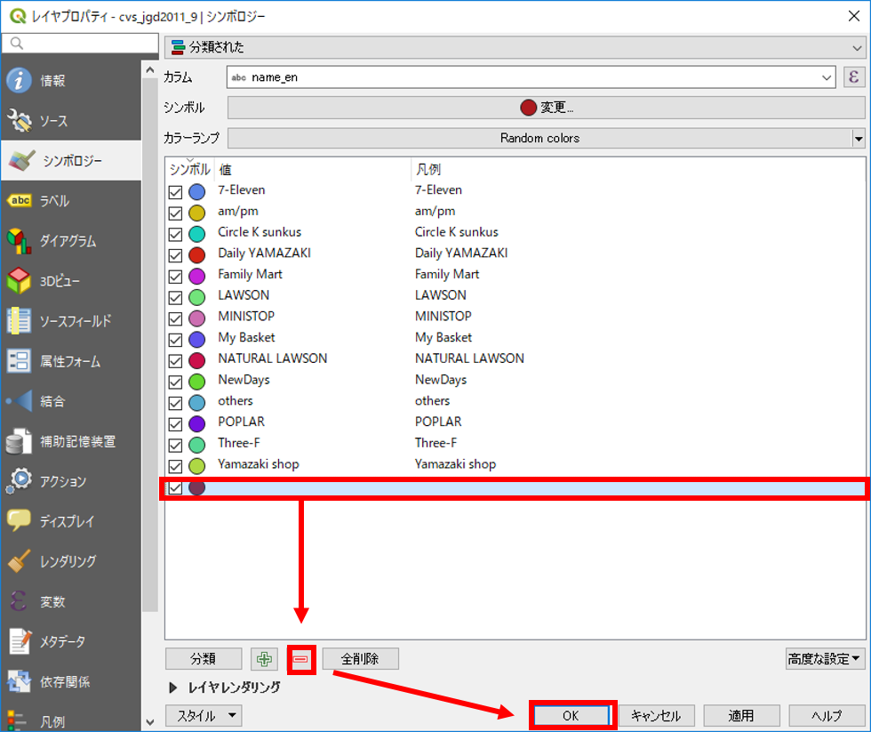
ラベル
データを表示する際に、属性情報に基づいてラベルを作成する機能です。以下では、属性値を用いて、ラベルを表示する手法について解説しています。
デフォルトでは「ラベルなし」になっているので、ラベルのポップアップメニューを選択し、単一のラベルを指定し、ラベルのもととなる属性を指定する。ここでは、name_enを指定する。OKをクリックすると変更が適用され、地図上にラベルが表示される。

地図タイルの読み込み
以下では、QGISにXYZタイル形式の背景地図（地理院タイル等）を読み込む手法について解説します。
アイコンが並ぶ箇所（グレーの個所）で右クリックし、パネル＞ブラウザパネルをクリックする。ブラウザパネル＞XYZ Tilesを探し、右クリックし新しい接続をクリックする。

国土地理院の地理院タイルのページから、２．基本測量成果以外で出典の記載のみで利用可能なもの＞タイル一覧＞空中写真・衛星画像＞2007年～を選択し、URLをコピーする。コピーしたURL、名前、ズームレベルを以下のように設定する。OKをクリックすると、ブラウザパネルにタイルが追加される。追加されたタイルをクリックすると、レイヤウィンドウにレイヤとして追加でき、地図も表示される。

※ 地理院タイルを利用する場合は、利用規約に従ってください。
【註】画像上に地物のラベルを重ね合わせて表示すると、ラベルが画像に紛れて読みにくいことがあります。そのような場合は、レイヤプロパティ＞ラベル＞バッファにて、「テキストバッファを描画する」をクリックし、テキストを縁取り表示させることで見やすくなります。
XYZタイルの一括読み込み
事前にタイル情報を記述したxmlファイルを用いて、接続をロードから、複数のタイルをを一括で読み込むことが可能です。ここでは、使用データのファイル内にあるgisoer_tiles.xmlを利用します。
gisoer_tilesは、株式会社MIERUNEのGitHub(MIERUNE/mierune-qgis)を参考に作成したものです。

地図のレイアウト
以下では、スタイリングしたデータと地理院タイルを用いて、地図をレイアウトして画像として出力する手法について解説します。この実習をはじめる前に、地図画面を任意の地域に拡大してください（以下では、東京大学本郷キャンパス周辺を表示しています）。
プロジェクト＞新規プリントレイアウトを選択し、タイトル（地図名など任意）を入力する。データが重ならない場合は、オンザフライCRS投影がうまくいっていない可能性があるので、QGISを再起動する。その後、サンプルデータ、XYZタイルの順で読み込む。

プリントコンポーザ
プリントレイアウトでは、以下の機能を利用して地図を作成することができる。

- アイテムの選択と移動
- 地図の移動
- 地図の追加
- 画像の追加
- テキストの追加
- 凡例の追加
- 縮尺バーの追加
- 地図の出力
※アイテムの削除は編集から行う。
レイアウト
以下のような地図を作成するため、地図、縮尺バー、凡例、タイトル等を追加する。

地図の追加
地図の追加ボタンをクリックし、地図のレイアウト画面上でドラッグして大きさを指定して、地図を追加する。※追加される地図は、QGISで表示している範囲となる。

縮尺バーの追加
以下のように、矢印の位置をクリックし、縮尺バーを追加する（ドラッグでの追加も可能）。縮尺バーを選択した状態で、アイテムプロパティのタブに切り替え、線分列の大きさの値等を変更する。


凡例の追加
縮尺と同様に凡例を追加する。凡例を選択し、アイテムプロパティで調整する。自動アップデートのチェックをはずすと凡例が編集できる。名称の変更、凡例項目の追加と削除ができる。 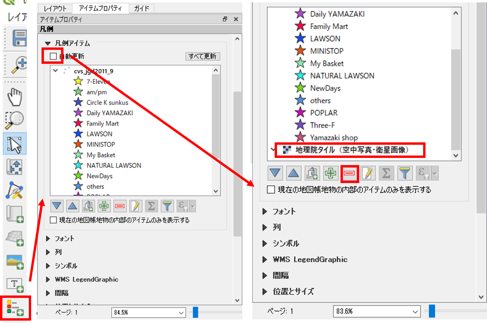

方位記号の追加
画像の追加から方位記号を追加する。アイテムプロパティ＞検索ディレクトリをクリックし、方位記号を選択する。デフォルトの状態では、図の赤枠部分をクリックしないと検索ディレクトリが開かないため、注意する。以下のように、アイテムプロパティで、画像の調節を行う。
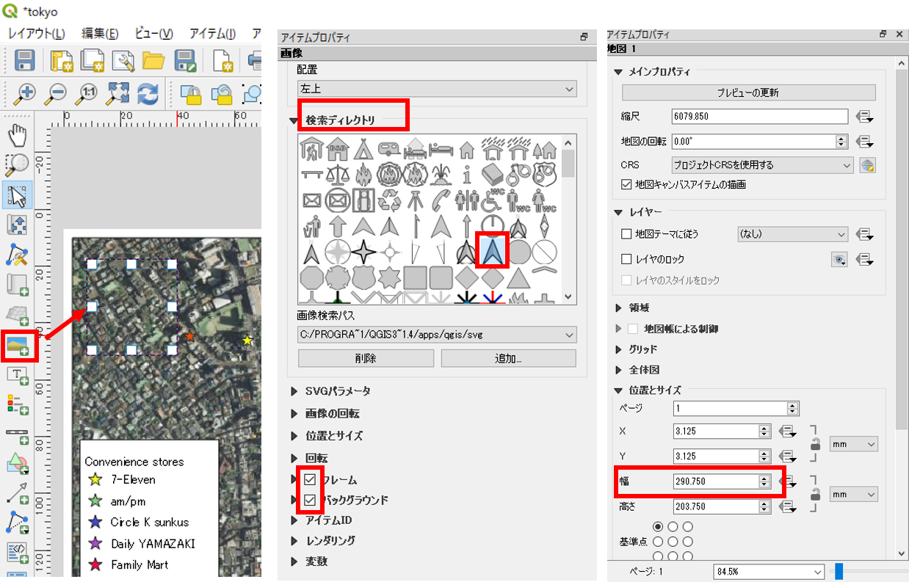
テキストの追加
テキストの追加からテキストを追加する。メインプロパティに入力したいテキストを記述する。

以下のように、フォントのサイズや配置等を調節する。

同様の手法で、任意の個所に、背景地図やデータのライセンス等必要な情報をテキストで追加する。
画像の出力
地図のレイアウトを整えた後、画像としてエクスポートする。レイアウト＞画像としてエクスポートを選択する。

エクスポートした画像ファイルをダブルクリックすると、以下のような地図が表示できる。画像を出力した後、プリントレイアウトを閉じる。

QGISのビュー上に凡例と方位記号を表示する
ビュー>地図装飾を選択する。地図装飾からスケールバー、方位記号を追加する。それぞれの表示にチェックを入れ、形式や配置を調整しOKをクリックする。

以下のように、QGISのビュー上に縮尺と方位記号が表示される。
作業ファイルの保存
QGISには、作業ファイルを保存する機能がある。これにより、一度QGISを閉じた後でも、前回の状態から作業を再開することができる。
プロジェクト＞名前を付けて保存をクリックし、任意の名称で出力する。次回開くときは、出力した.qgzファイルをダブルクリックするとQGISが立ち上がる。

【註】Macではインストール後に.qgzファイルとQGIS3の関連付けがなされていませんので、クリックしたときにアプリケーションの選択を聞かれますので、そこでQGIS3を「開くアプリケーション」として指定してください。
プラグイン
QGISでは、オフィシャルプラグインリポジトリ等から、様々な拡張機能をプラグインとしてインストールできます。プラグインをインストールすることにより、様々な処理が可能になります。プラグインの実際の使用法は、他の教材で解説しているため、ここではインストール方法のみ解説しています。
プラグイン＞プラグインの管理とインストールを選択する。
検索から、インストールしたいプラグインを検索する。例として、以下のような便利なプラグインがある。 【註】OpenLayers Pluginのように、プラグイン＞設定にて「実験的プラグインも表示する」にチェックを入れないと検索候補として表示されないものもあります。
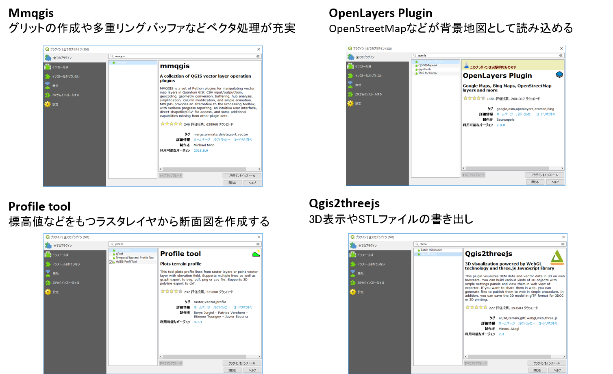
データの保存形式
GISでは、Shapefile（シェープファイル）形式のベクトルデータを用いることが多いです。しかし、使用するソフトウェアやアプリケーションによっては、別の形式のファイルを使用します。ここでは、QGISによるデータのエクスポートについて解説します。
レイヤの上で右クリックし名前をつけて保存をクリックする。QGISでは、シェープファイル以外にも、KMLやCSV等、様々な形式のデータを出力することができる。

KMLは、Google Earthで利用できる形式である。Cesiumなどを利用することで、Web上でも表現しやすいデータである。
 上の図は、東京駅から東京タワーまでの道のりを表示したもの。
上の図は、東京駅から東京タワーまでの道のりを表示したもの。
CSVは、カンマで区切られたデータ形式である。座標値をもっていればCartoなどで簡単にWeb GISとして表現できる。 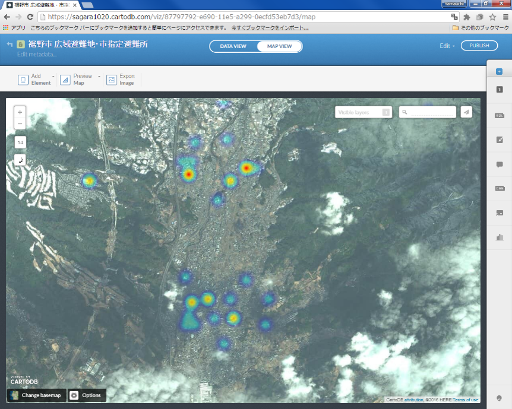 上の図は、裾野市オープンデータ 広域避難地・市指定避難所データを加工したものを利用し作成したもの
この教材の課題ページ_QGISビギナーズマニュアルへ進む
ライセンスに関する注意事項
本教材で利用しているキャプチャ画像の出典やクレジットについては、その他のライセンスについてよりご確認ください。
課題：QGISビギナーズマニュアル
この課題はGISの入門として、QGISを用いて地図の作成を行うものです。各課題の手順とQGISビギナーズマニュアルを参考に、完成例のような地図を作成しましょう。GIS初学者は、本教材を進める前にGISの基本概念教材を一読してください。
実習用データ
本実習をはじめる前に、fkuchiyama_sample.zipをダウンロードしてください。
課題①_地図のレイアウト
平成26年8月豪雨後に実施した京都府福知山市でのフィールド調査（インタビュー）データを用いて、完成例のような地図を作成してください。また、作成する地図は、調査地点、凡例、方位、縮尺バー、タイトル等をレイアウトしたものとします。
完成例

手順
- QGISに実習用データを読み込む
- ブラウザパネルから、地理院タイルを読み込む
- ポイントのスタイルを調整する
- 完成例のように、地図をレイアウトする
この課題を動画で学ぶ
この動画は、上記の手順をまとめたものです。画面の大きさや再生速度等を調節して、ご利用ください。
実習用データのソース
実習用データは、無償で利用可能なデータを加工して作成したものです。データのソースは、各ファイルのREADME.mdにまとめています。
既存データの地図データと属性データ
本教材は、「既存データの地図データと属性データの実習用教材」です。GISのデータは、複数の形式があり、様々な機関が提供しています。本教材では、無償で提供されるGISデータや、そのダウンロード手法について解説しています。
Menu
以下は解説を省略したため、関心のある方は、GIS実習オープン教材を参照してください。
国土地理院の基盤地図情報
基盤地図情報は、国土交通省国土地理院が整備しているデータです。市町村や2次メッシュ単位で、測量の基準点のほか、行政区画の境界（2500レベル以上）や道路縁（2500レベル以上）等がダウンロードできます。また、地形表現や解析等で用いることのできるDEM（Digital Elevation Model）もダウンロードすることができます。基盤地図情報として提供されているデータは、ダウンロード後に変換が必要です。以下では、基盤地図情報からデータをダウンロードする手法について解説しています。教材に従って任意のファイルを選択し、ダウンロードを試してください。※基盤地図情報の利用については、測量法に従ってください。
アカウントの作成
基盤地図情報ダウンロードサービスにアクセスし、右上にある「ログイン」メニューからログインする。アカウントがない場合は、ログイン画面の所で「新規登録」のリンクがあるので、アカウントの新規登録を行う。
基盤地図情報基本項目：ベクタデータの取得
ログインした状態で、基盤地図情報ダウンロードサービスから基盤地図情報 基本項目のファイル選択へをクリックする。地図をスクロールし、ダウンロードするデータを選択する。ここでは、練習として東京大学本郷キャンパスが含まれる533946を選択し、ダウンロードファイル確認へをクリックする。データが選択できたら、全てチェックをクリックし、まとめてダウンロードをクリックする。変換する範囲が都道府県全体のように大きいと、処理に時間がかかるため、練習では533946の区画のみとする。以下の動画も参考にデータのダウンロードを練習してください。
ダウンロードしたデータの表示とエクスポート
以下では、基盤地図情報基本項目をベクトルデータに変換する手法として、QGISを利用する手法とFGDVを利用する手法を解説します。
QGISでのデータの表示と出力
ダウンロードした.zipを解凍し、以下の手順を実行します。1.xmlをQGISにドラッグアンドドロップする。この際、座標系を指定するウィンドウが立ち上がるため、2.フィルターからJGD2011を検索し、3.OKをクリックする。しばらくするとデータが表示される。上記の手順を繰り返し、ファイル内の.xmlを読み込む。

データが表示されたのを確認し、レイヤーウィンドウのデータの上で右クリックし、エクスポート>地物の保存を選択する。次に、1.ESRI Shapefileを指定し、2.ファイル名と保存場所を設定する。最後に、3.OKをクリックする。

※Shapefileは複数のファイルで出力されるため、出力したファイルを移動する際は、すべて移動するように注意する（.shpのみを移動したために、データが表示できないというミスが多い）。
基盤地図情報数値標高モデル(DEM)：ラスタデータの取得
ログインした状態で、基盤地図情報ダウンロードサービスから基盤地図情報 数値標高モデルのファイル選択へをクリックする。
地図をスクロールし、ダウンロードするデータを選択する（ここでは、例として東京大学本郷キャンパスが含まれる533946を選択し、ダウンロードファイル確認へをクリックする。
データが選択できたら、全てチェックをクリックし、まとめてダウンロードをクリックする。ダウンロード後、Zipファイルを解凍する。
基盤地図情報からダウンロードしたDEMを変換する
基盤地図情報からダウンロードした数値標高モデルをGISソフトウェアで処理するためには、ラスタデータへの変換が必要です。以下では、株式会社エコリスのＨＰのコンバーターを用いた変換について解説しています。株式会社エコリスのＨＰから、標高DEMデータ変換ツールをダウンロードし、DEMtool.zipを解凍する。解凍したファイルを開き、変換結合.vbsを実行する。
投影法を尋ねるダイアログが出るので、緯度経度を選択するために'0'を入力する。陰影図の作成が必要な場合は、「はい」をクリックする（今回はいいえとした）。

基盤地図情報からダウンロードしたDEMが入っているフォルダを選択し、海域の標高値を選択する（今回は「はい → 0」を選択した）。変換作業を開始し、完了のメッセージを待つ。変換対象として選んだフォルダー内に、[番号].tifの名前を持つファイル群が出力されているかを確認する。

ファイルの変換が終了すると、ファイル内にmerge.tifが出力されるため、これをQGISで読み込み、データを確認する（標高に応じて白と黒の濃淡が表現されていることを確認する）。ラスタデータの配色（値に応じた色分け）は、空間データの統合・修正の教材で解説している。
地理院地図
国土地理院が提供するデジタル地図として、地理院地図があります。地理院地図では、2万5千分の1地形図や空中写真等を電子化した電子国土基本図のほか、土地条件図などの主題図を閲覧することができます。地理院地図は、オープンソースとして提供されています。タイルで配信されているデータは、WEB地図やGISソフトウェアで背景地図として利用することができます。
国土交通省の国土数値情報
国土数値情報は、国土交通省が整備しているGISデータで、国土計画の策定や推進のために提供されているものです。ほとんどのデータが、シェープファイルで提供されています。以下では、国土数値情報のサイトから、データをダウンロードする手法について解説をしています。教材に従って任意のファイル（3.地域 学校など）を選択し、ダウンロードを試してください。
-
国土数値情報のサイトにアクセスする。JPGIS形式もしくは、旧統一フォーマットを選択し、任意の項目にチェックをいれて下段の
選択をクリックする。 -
データの範囲を決めるため、任意の地域にチェックをいれ選択をクリックする。今回は最新版の世界測地系のデータをダウンロードすることとし、該当する項目にチェックをいれ、
選択をクリックする。 -
アンケートに回答し、利用約款を読み
はいをクリックする。 -
ダウンロードをクリックすると、データが保存できる。QGISなどでデータを読み込む場合は、ダウンロード後に.Zip形式のファイルを解凍する必要がある。
以下は、上記の手順を動画にまとめたものです。
この教材の課題ページ_既存データの地図データと属性データへ進む
ライセンスに関する注意事項
本教材で利用しているキャプチャ画像の出典やクレジットについては、その他のライセンスについてよりご確認ください。
課題：既存データの地図データと属性データ
日本では、様々な機関からGISで利用できるデータが、提供されています。この実習は、それらのデータをダウンロードする手法とその活用について学ぶものです。GISオープン教材の既存データの地図データと属性データの教材を参考に、任意のサイトからデータを取得し地図を作成してください。GIS初学者は、本教材を進める前にGISの基本概念の教材を確認しておいてください。
課題②_データのダウンロードと活用
以下の1〜4のデータをそれぞれのサイトからダウンロードし、1～4を重ね合わせ、災害（洪水）を想定した防災マップを作成してください。ここでは、任意の地域（居住または、出身等）のデータを取得し、必要な場合は.shpまたは、.tiffに変換してください。作成する地図は、避難所が10地点程度となるまでにズームし、タイトル、凡例、方位をつけ、1~3 のレイヤのスタイルを調節（見やすく）したものとします。 4のスタイルの変更は不要です（4のスタイルの変更は、空間データの統合・修正等で扱う内容です）。
- データ1：基盤地図情報の基本項目の2500レベルの道路データ
- データ2：国土数値情報の避難施設データ
- データ3：国土数値情報の浸水想定区域データ
- データ4：基盤地図情報数値標高モデル 10m DEM
※データ1、2、3、4を重ね合わせて、災害時に利用できる道路と避難所を示す。
本実習の注意点
- シェープファイルは複数で1つのファイル（.shp .shx .dbfなど）であるため、移動する際はすべて移動する
ネットワーク分析
本教材は、「ネットワーク分析」の実習用教材です。GISソフトウェアを用いた、最短経路検索や到達圏検索の手法について解説したものです。
Menu
以下に関心がある方は、GIS実習オープン教材を参照してください。
実習用データ
実習をはじめる前に、networkをダウンロードしてください。
最短距離検索
QGISで、2点間の最短距離を求める手法について解説します。この実習をはじめる前にhospital.shpとpath.shpをQGISに読み込んでください。
プロセッシング＞ツールボックス＞ネットワーク解析＞最短経路（ポイントからポイント）をクリックする。地図上で経路を検索したい二点の場所をクリックし、実行すると最短経路が表示される。
表示されている道路を基準にして、経路を検索したい二点の場所をクリック。 最短経路を表示するウインドウに検索結果が表示される。
出発点を一つとし、各病院間の最短経路を出力する場合は、プロセッシング＞ツールボックス＞ネットワーク解析＞最短経路（ポイントからポイント）をクリックし、地図上で出発点の場所を指定する。処理を実行すると各病院までの最短経路が表示される。

分析結果を確認するため、プロパティ＞シンボロジー＞分類されたから、カラムをコスト（出力した各病院までの最短経路の長さ）とし、分類をクリックする。ラインの色や太さを調整し、OKをクリックする。
この教材の課題ページ_ネットワーク分析へ進む
ライセンスに関する注意事項
本教材で利用しているキャプチャ画像の出典やクレジットについては、その他のライセンスについてよりご確認ください。
課題：ネットワーク分析
GISでは、道路などのラインデータ等を用いて任意の地点間の経路等を求める場合等にネットワーク分析が用いられます。この実習は、道路データを用いたネットワーク分析として最短経路検索を行うものです。以下の手順とGISオープン教材のネットワーク分析の教材を参考に、完成例のような地図が作成できれば、完了となります。GIS初学者は、本教材を進める前にGISの基本概念の教材を確認しておいてください。
実習用データ
実習をはじめる前に、taketomiをダウンロードしてください。
課題③_最短経路検索
最短経路検索は、任意の地点間の最短経路を取得する際に用いられる手法です。QGISで簡単にできる最短経路検索を以下の手順とネットワーク分析を参考に行い地図を作成後、以下の課題に回答してください。
- 竹富港からコンドイビーチまでの最短経路（標高などのコストを含まない）とその距離を回答してください。
完成例
手順
road.shpとpoints.shpをQGISで読み、points.shpのラベル（Nameフィールド）を表示する。- プロセッシングツールボックスを開き、最短経路（ポイントからポイント）を実行する。
- 属性テーブルから、最短距離（
costフィールド）を確認する。 - 完成例のように、最短経路を示した地図をレイアウトする。
実習用データのソース
実習用データは、無償で利用可能なデータを加工して作成したものです。データのソースは、各ファイルのREADME.mdにまとめています。
2019年度 地球惑星環境科学科リモートセンシング・ GISおよび実習 （GIS回）
2/6(木)：ベクタデータ分析入門
- 空間座標系の変換
- 基本的な空間解析（ディゾルブやクリップ等）
- 領域分析（バッファ）
- 点データの分析（メッシュ集計、カーネル密度推定）
実習の注意事項
この実習から、以下の点に注意して学習を進めてください。
- 実習用データは、ダウンロードした後、座標を確認・変換して利用してください。※データのダウンロード時に、フォルダ内のすべてのデータを変換することが望ましい。
- 適切な座標系が指定されていない地図を提出した場合は、減点対象となります。
- 教材内で同じデータを再度取得するような指示がありますが、すでに対象のデータを取得・変換した場合は、そのデータを利用してください。※ データの管理方法等は、各自で検討してください（作業の効率がよくなるように整理して保管する）。
- この実習では、ラスタデータの座標変換は無視してください。
空間データ
本教材は、「空間データ」の実習用教材です。GISソフトウェア（QGIS）を用いて、空間座標の変換、ジオリファレンス、ジオコーディングについて解説しています。講義用教材として、地理情報科学教育用スライド（GIScスライド）の3章が参考になります。
Menu
以下は解説を省略したため、関心のある方は、GIS実習オープン教材を参照してください。
実習用データ
実習をはじめる前に、Sabaeをダウンロードしてください。
空間座標の変換
地理空間情報（GISで扱うことのできるデータ）は、測地系と座標系に基づいた位置情報を保持しています。測地系や座標系は様々なものがあります。そのため、複数のデータを処理する場合は、各データの座標系を統一する必要があります。その際に、空間座標の変換を行います。以下では、QGISを用いた変換手法を解説しています。空間座標系についての解説は、地理情報科学教育用スライド（GIScスライド）の3章やGISの基本概念の教材を参照してください。また、この実習を始める前に、以下の座標変換の正誤事例を参照し、今後の作業で誤った座標変換を行わないように注意してください。
※以下の教材で使用しているQGIS3.4では、JGD2011の変換のエラーがあるため、JGD2011のデータに対してJGD2000を割り当てている点に注意してください。
測地系変換
Sabaeをダウンロードし、以下の手順に従って、sabae_aed_tokyo（日本測地系 緯度経度）とsabae_aed_jgd2000（世界測地系 緯度経度）のシェープファイルをQGISに読み込む。

- データソースマネージャを開く。
- エンコーディングをUTF-8に設定し、ソースから、ダウンロードした日本測地系と世界測地系のshape（sabae_aed_jgd2000とsabae_aed_tokyo）を指定する。
- 「追加」 をクリックする。
この際に、QGISが自動で、擬似的な位置あわせをしてしまうため、オンザフライ投影の機能をオフにする。

- 右下のEPSGのボタンをクリックする。
- 投影なしにチェックをつけ、オンザフライ投影を無効にする。
以下のように、データは同じ場所のものにもかかわらず、座標系が異なるためずれて表示されることを確認する。

それぞれのレイヤの上で右クリックして、プロパティ（ソースのタブ）から座標系を確認する。

以下の手順で、日本測地系を世界測地系へ変換する。

- プロパティ＞エクスポート＞地物の保存をクリックする 。
 2. 新規レイヤの出力先と名前を選択する。
3. CRSを選択するために、図中の③をクリックし、フィルターからJGD2000を検索し、OKをクリックする。
4. OKをクリックする。
2. 新規レイヤの出力先と名前を選択する。
3. CRSを選択するために、図中の③をクリックし、フィルターからJGD2000を検索し、OKをクリックする。
4. OKをクリックする。
以下のように、測地系がJGD2000に変換された。

投影変換
以下では、地理座標系のデータを投影座標系の平面直角座標系へ変換する手法について解説する。世界測地系緯度経度のデータを用いて、以下の処理を行う。

- プロパティ＞エクスポート＞地物の保存をクリックする。
- 新規レイヤの出力先と名前を選択する。
- CRSのボタンをクリックし、変更したいCRSを選択（JGD2000 / Japan Plane Rectangular CS Ⅵ）してOKをクリックする。
- OKをクリックする。
以下のように、座標系が（JGD2000 / Japan Plane Rectangular CS Ⅵ）に変換された。座標系が変換したため、レイヤが重なって表示されないことを確認する。

※世界測地系の平面直角座標系へ変換する場合に、地域によって○○系と指定する必要がある。詳しくは、国土地理院の[平面直角座標系の対応表]を参考にする。
※空間座標の変換のよくある間違いとして、新規にデータを作成せず、プロパティ（一般情報）の空間参照システムからCRSを選択する等があるため、今後同様の処理を実行するときに注意する。
この教材の課題ページ_空間データへ進む
ライセンスに関する注意事項
本教材で利用しているキャプチャ画像の出典やクレジットについては、その他のライセンスについてよりご確認ください。
課題:空間データ
この実習は、空間座標の変換について学ぶためのものです。以下の手順と空間データの教材を参考に、完成例のような地図を作成してください。
Menu
実習用データ
本実習をはじめる前に、以下のデータをダウンロードしてください。
- 課題1 東京23区コンビニ
課題①_空間座標の変換
東京23区コンビニのデータを世界測地系の平面直角座標系へ投影変換し、地図をレイアウトしてください。次に、地理座標系と投影座標系の違いについて、WEBで調べて300字程度でまとめてください。
完成例
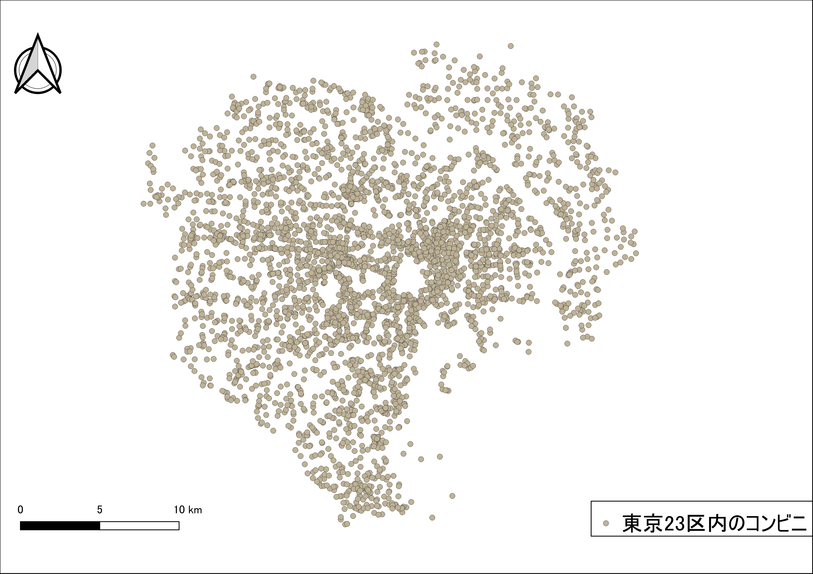
手順
tokyo23ku-cvs_jgd2000.shpをQGISに表示する。- 平面直角座標系（JGD2011の9系）に変換する。変換後の座標変換の結果がわかりづらいため、QGIS画面右下のEPSGコード6677に設定し直す。
- 地図をレイアウトする。
- QGISの作業ファイル（.qgs）に任意の名前をつけ保存し、画面を閉じる。
- 地理座標系と投影座標系の違いについて、300字程度でまとめる。
実習用データのソース
実習用データは、無償で利用可能なデータを加工して作成したものです。データのソースは、各ファイルのREADME.mdにまとめています。
基本的な空間解析
本教材は、「基本的な空間解析」の実習用教材です。GISソフトウェア（QGIS）を用いた、地物の計測、ディゾルブ、クリップなどの空間解析手法について解説しています。講義用教材として、地理情報科学教育用スライド（GIScスライド）の4章が参考になります。
Menu
実習用データ
実習をはじめる前に、tokyoとshinobazuをダウンロードしてください。
課題_基本量の測定と空間オブジェクトの選択
GISでは、データの形状や属性情報を用いて、地物の長さや面積を計測することができます。ここでは、東京都23区の行政区域と地理院タイル（空中写真・衛星画像）を用いて、不忍池の周長と面積の計測を行います。QGISでの計測は、手動のものと自動のものがあり、以下では両方の手法を解説します。
東京都23区の境界データを先に読み込んだ後に、ブラウザパネルのXYZタイルの追加から、地理院タイル（空中写真・衛星画像）を読み込んで下さい。

手動で、長さor面積を計測する方法
計測ツールをクリックし、線の長さを測るを選択する。

不忍池の周長を測定
池の外周を縁取るように、点を打ち、最初の点と重なったところで右クリックすると周長が計算できる。

不忍池の面積を測定
池の外周を縁取るように、点を打ち、最初の点と重なったところで右クリックすると面積が計算できる。

フィールド演算から、長さor面積を計算する方法
shinobazuのポリゴンを読み込み、周長と面積を計算する。

- 属性テーブルを開き、編集モードに切り替える。
- フィールド計算機を開く。
新規フィールドを作成し、フィールド演算を行う。

- 「新しいフィールドを作る」にチェックする。
- フィールド名： perimeter
- 出力フィールドタイプ： real
- 出力フィールド幅： 10 ※任意で変更可
- 精度： 5 ※任意で変更可
- 関数： ジオメトリから$perimeterをダブルクリックする。※式に$perimeterが表示される。
- ※今回は周長なので$perimeterを選択する。
- ※線長を計測する場合には、$lengthを使用する。
- OKをクリックする。 ※面積の計測には、同じ手順で、$areaを使用する。
周長(length)と面積(area)のフィールドがつくられる。

フィールド計算を用いた計算
フィールド計算機では、様々な関数による計算を行うことができる。以下では、よく利用される関数を紹介したものである。
| 関数名 | 処理内容 |
|---|---|
| $length | 線長 |
| $area | 面積 |
| $geometry | ジオメトリ |
| $x | x座標 |
| $y | y座標 |
| $id | 連番 |
空間オブジェクトの選択
以下では、空間オブジェクトの選択の例として、台東区を検索する手法について解説しています。
地図から選択する場合、選択ボタンを利用する。レイヤウィンドウで対象レイヤをクリックし、青色になっているのを確認したのち、地物選択をクリックする。地図上で、台東区の場所をクリックすると、色が黄色（選択色）になる。

属性テーブルから、選択したエリアの情報を表示することができる。

- 属性テーブルを開き選択した地物を表示する。
- 地図で選択した地物のみ表示される。
その他の空間データの操作
GISでは、データの位置、形状、属性を用いて新たにデータを作成することができます。以下では、マージ（複数のデータを1つに結合）、ディゾルブ（属性を用いてデータを融合する）、クリップ（重なっているデータを指定し、特定の範囲を切り取る）について解説します。マージ、ディゾルブ、クリップの詳しい説明は、地理情報科学教育用スライド（GIScスライド）の4章を参照してください。
※あらかじめ、新規にフォルダを作成し、台東区と墨田区のシェープファイルを移動して下さい。シェープファイルは複数のデータで一つのファイルであるため、移動の際はすべてを動かすようにして下さい（.shpファイルのみ移動すると、データが表示できない）。
台東区と墨田区のポリゴンをマージ(Merge)する
空間選択から作成した台東区と墨田区のポリゴンデータをQGISで読み込む。ベクタ＞データマネージメントツール＞複数のシェープファイルを一つに結合するからマージする。

- ポリゴンを選択する。
- ブラウズから入力ディレクトリを選択する。
- ブラウズから出力するシェープファイルの保存する場所と名前を入力する。
- OKをクリックする。
台東区と墨田区がマージされ、一つのポリゴンになった。

マージしたポリゴンをデイゾルブ(Dissolve)する
ベクタ＞空間演算ツール＞融合からディゾルブを行う(町丁目界のないポリゴンの作成)。

- 入力レイヤを選択する。
- ディゾルブフィールドを指定する（融合フィールドは、属性が統一されている行を選択する）
- ブラウズから、出力場所と名前を入力する。
- 実行をクリックする。
町丁目界がなくなり、単純なポリゴンが作成できた。

点データポリゴンでクリップ(Clip)する
ベクタ＞空間演算ツール＞クリップ からクリップを行う（対象エリアにあるレイヤの切り取り）。
23区のコンビニデータを読み込む。

- 入力レイヤをポイントにする。
- オーバーレイヤを融合にする。
- ブラウズから、出力場所と名前を入力する。
- 実行をクリックする。 ※入力レイヤ： 切り取りたいレイヤ。 クリップレイヤ： クリップに使うレイヤ。
台東区と墨田区にあるコンビニが抽出できた。

オーバーレイ分析
オーバーレイ分析は、空間データを重ね合わせブール演算をもとに領域を抽出する手法である。以下では、インターセクトとユニオンの手法について解説している。インターセクトとユニオンの詳しい説明は、地理情報科学教育用スライド（GIScスライド）の4章を参照してください。
インターセクト(Intersect)
国土数値情報の河川レイヤを用いて、東京の河川データを読み込み、インターセクトし(Intersect)別のポリゴンを作成する。ベクター＞空間演算ツール＞交差からインターセクトを実行する。

- 入力ベクタレイヤを河川にする。
- 交差レイヤを融合にする。
- ブラウズから、出力場所と名前を入力する。
- 実行をクリックする。
江東区と墨田区に交差する河川レイヤが新規に作成できた。
※属性情報をチェックしクリップとの違いを確認する。属性情報は更新されないのでラインの長さやポリゴンやの面積は、再計算が必要な点に注意する。

ユニオン (Union)
台東区と墨田区のポリゴンを一つのポリゴンに統合する。
ベクター＞空間演算ツール＞統合からユニオンを行う。

- 入力レイヤをディゾルブした23区のポリゴンにする 。
- オーバーレイヤを台東区と墨田区のポリゴンにする。
- ブラウズから、出力場所と名前を入力する。
- 実行をクリックする。
台東区と墨田区のポリゴンを一つのポリゴンに統合できた。

この教材の課題ページ_基本的な空間解析へ進む
ライセンスに関する注意事項
本教材で利用しているキャプチャ画像の出典やクレジットについては、その他のライセンスについてよりご確認ください。
課題：基本的な空間解析
本実習では、空間データから新たなデータを計測する手法および複数の空間データの位置関係から新規データの作成や距離の計測を行います。課題1としてGISソフトウェア上で地物の大きさを計測する手法を学びます。課題2では、ベクトルデータの形状を用いて新規のデータを作成する手法を学びます。以下の手順とGISオープン教材の基本的な空間解析の教材を参考に、完成例のような地図が作成できれば、完了となります。
実習用データ
本実習をはじめる前に、osakaをダウンロードしてください。
Menu
課題②_周長と面積の計測
GISで示される地物は、位置や形状が座標で管理されています。そのためGIS上で、周長や面積計算を行うことができます。以下の手順と基本的な空間解析の教材を参考に、を参考に、大阪市の24区の行政界を用いて、それぞれの周長と面積を算出した後、浪速区の周長と面積を回答してください。
手順
- QGISで、
osaka_6kei.shpを読み込む。 - 新規属性テーブルを作成し、区ごとに周長を計測する。
- 同じように新規属性テーブルを作成し、各市町村ポリゴンごとに面積を計測する。
- 地図から浪速区を空間選択し、属性テーブルの周長と面積確認し、質問に回答する。
課題③_データの形状や属性を用いた解析
この実習は、解析に必要な範囲を求め、新規レイヤとして抽出するものです。GISでは、ベクトルデータの保持する形状、位置、属性等の情報を用いることで特定の条件にあった新規レイヤを抽出することができます。以下の手順と基本的な空間解析の教材を参考に、淀川が流れる区のみを抽出し、完成例のような図を作成してください。
完成例
手順
osaka_6kei.shp、yodo_river.shp、school.shpをQGISで読み込む。- 淀川が流れる市町村を選択して、
名前を付けて保存から出力する。 - 2で出力したポリゴンをデイゾルブする。
- ディゾルブしたポリゴンを用いて、淀川をクリップする。
- ディゾルブしたポリゴンを用いて、区内の学校をインターセクトする
- 出力したデータを用いて地図をレイアウトする。
完成例で使用したデータ
本ページで使用しているデータの出典については、該当する教材よりご確認ください。
領域分析
本教材は、「領域分析」の実習用教材です。GISソフトウェア（QGIS）を用いた、バッファなどの領域分析の手法について解説しています。本実習と対応する講義用教材として、地理情報科学教育用スライド（GIScスライド）の4章が参考になります。
Menu
以下に関心がある方は、GIS実習オープン教材を参照してください。
実習用データ
実習をはじめる前に、tokyoをダウンロードしてください。
バッファ
バッファは、地物からの距離に応じて、一定の領域を作成する手法です。以下では、QGISと実習用データを利用し、ポイントデータからバッファを作成する手法や、一定の距離に区切った多重リングバッファを作成する手法について解説します。加えて、バッファで作成した領域を用いた、空間検索の手法も解説します。
点バッファの作成
以下では、バッファの例として、東京都のコンビニデータを利用し、コンビニから500mのバッファを算出し、空間検索でバッファと重なる郵便局を抽出する。まず、バッファを作成するために、ベクタ＞空間演算ツール＞バッファを選択し、以下の手順を実行する。

- コンビニのポイントデータを選択（※事前に投影座標系であることを確認しておくと良い）。
- 距離を500と設定。
- 円を近似させる線分の数10を入力する。（数が多いほどきれいな円になる）。
- 出力先と名称を指定。
- OKをクリック。
(左)各コンビニから500mのエリアが表示できた。
(右)結果を融合にチェックをいれた場合の例。

線バッファと面バッファ
同じ方法で、ラインやポリゴンからのバッファも作成できる。

空間検索を利用した抽出
以下では、空間検索を利用して、バッファと重なる地物を選択する手法について解説します。
ベクタ＞調査ツール＞場所による選択をクリックする。

- ソース地物の選択、郵便局を選択。
- 交わるをチェック。
- バッファを選択。
- 実行をクリック。
下の図のように、コンビニから500m圏内の郵便局が選択された。

多重リングバッファ
多重リングバッファを実行するため、プラグイン＞プラグインの管理とインストール からMulti-distance bufferをインストールする。
プラグインをインストールをクリックする。

ベクタ＞Multi-distance buffer＞Multi-distance bufferから以下の手順で多重リングバッファを作成する。

- コンビニを選択。
Addで距離を追加。- 出力レイヤ名を入力。
- OKをクリック。
100mごとの多重リングバッファができた。名前をつけて保存から新規レイヤとして出力する。

属性データを用いて、100mごとの色分けを行う。

下の図のように、100mごとの多重リングバッファの表示が変更された。

この教材の[課題ページ_領域分析]へ進む
ライセンスに関する注意事項
本教材で利用しているキャプチャ画像の出典やクレジットについては、その他のライセンスについてよりご確認ください。
課題:領域分析
この実習は、ポイントデータから領域を作成する手法として、バッファを行うものです。以下の手順とGISオープン教材の領域分析の教材を参考に、地図を作成してください。GIS初学者は、本教材を進める前にGISの基本概念の教材を確認しておいてください。
実習用データ
実習をはじめる前に、osakaをダウンロードしてください。
課題④_バッファの作成
大阪市およびその周辺の河川（river.shp）と学校（school.shp）を用いて、河川(river.shp)から200m圏内に含まれる学校（school.shp）の件数を回答してください。
手順
- ダウンロードしたデータをQGISで読み込む。
ベクタ＞空間演算ツール＞バッファから200mのバッファを作成する。ベクタ＞調査ツール＞場所による選択で空間検索を実行し、属性テーブルからバッファ内の保育施設の数を計測する。
実習用データのソース
実習用データは、無償で利用可能なデータを加工して作成したものです。データのソースは、各ファイルのREADME.mdにまとめています。
点データの分析
本教材は、「点データの分析」の実習用教材です。QGISを用いて、点データの密度を可視化し視覚的に分析する手法や、点パターン分布を数理的に分析する手法について解説しています。理論の解説は、講義用教材の地理情報科学教育用スライド（GIScスライド）の4章が参考になります。
Menu
視覚的分析
以下は解説を省略したため、関心のある方は、GIS実習オープン教材を参照してください。
実習用データ
実習をはじめる前に、tokyoをダウンロードしてください。
視覚的分析
以下では、国土数値情報のコンビニエンスストアのデータを用いて、QGISでポイントデータの密度を視覚的に分析する手法について解説しています。前提として、点データの視覚的分析では、メッシュや行政区画などの空間集計に用いるオブジェクトの大きさに影響されることを注意する必要があります。
点の分布密度
下の図は、QGISでcvs_jgd2011_9.shpファイルを読み込み、東京都のコンビニエンスストアの分布を示したものです。この図を見ると点が密集している地域とそうでない地域があることはわかります。しかし、地域ごとの密度の違いはよくわかりません。そこで、以下ではQGISでメッシュ（方形区）や行政区画ごとに密度を可視化する手法を解説します。

メッシュによる点密度の表示
プロセッシング＞ツールボックス＞ベクター作成＞グリッドの作成から以下の手順で、メッシュを作成する。ここでは、500m×500mのメッシュを作成する。

- 長方形（ポリゴン）を選択する。
- レイヤの領域を使うため、cvs_jgd2011_9を選択する。
- 水平、垂直方向をそれぞれ500mとする。
- 出力先とファイル名を指定する。
- 実行をクリックする。
下の図のように、500m×500mのメッシュが作成できる。

メッシュ内のポイント数を計算する
ベクタ＞解析ツール＞ポリゴン内のポイント数からメッシュ内のポイント数を以下のように計算する。

- ポリゴンに出力したメッシュを選択する。
- ポイントにコンビニのレイヤ(cvs_jgd2011_9.shp)を指定する。
- 出力先を指定する。
- 実行をクリックする。
以下のように、メッシュ内のポイント数を集計した、新規ポリゴンが作成される。
 属性テーブルを開き、一番端の列のデータを並び替えて表示すると、計算結果が追加されていることが確認できる。
属性テーブルを開き、一番端の列のデータを並び替えて表示すると、計算結果が追加されていることが確認できる。
メッシュ内のポイント数で色分け
プロパティ＞シンボロジーから メッシュ内のポイント数をもとに色分けを行う。

※属性値が、文字型になっていると、ポリゴン内のポイント数の段階づけの色分けができない。そのため、以下の手順で数値型へ変換する。メッシュの属性テーブルを開き、フィールド計算機>新しいフィールドを作るから、フィールド名（任意）を入力し、出力フィールドタイプをintegerにする。次に、フィールドと値からポイントを集計した列名を選択し、OKをクリックする。再計算が完了したのを確認し、編集モード（鉛筆マーク）をクリックし編集結果を保存する。
以下のように、メッシュごとにコンビニの密度が可視化される。

行政区内の点密度
以下では、行政区画のポリゴンを利用し、行政区ごとの点密度を計算する手法について解説しています。tokyo23ku_jgd2011_9.shpを読み込み、解析ツール＞ポリゴン内のポイント数から、以下ののように設定し、行政区ごとのコンビニ数を計算する。

計算結果のスタイルをプロパティから設定する。
プロパティ＞シンボロジーから属性値に応じて、以下のようにポリゴンの表現を整える。

カーネル密度推計
カーネル密度分析は犯罪発生マップなどに用いられる手法で、カーネル関数を用いてポイントの分布密度を連続的な密度局面としてモデル化する手法です。QGISでは、プロセッシング＞ツールボックス＞データ補間＞ヒートマップ（カーネル密度推定）を選択し、以下のように実行します。


- 入力ポイントレイヤにコンビニのデータを選択する。
- 半径を500mとする。
- ピクセルサイズをそれぞれ、20とする。 ※ピクセルサイズが、小さすぎると処理時間が長くなるため十分に注意する。
- 出力ラスタを設定し、実行をクリックする。
出力されたラスタの配色を、プロパティ＞シンボロジーから設定する。

半径の値（バンド幅）を変えて出力し、同じ閾値で分類すると結果が変わることも確認しておくと良い。バンド幅を広くとったカーネルは広域的傾向把握に有効である。一方で、局地的な値への対応が難しくなる。そのため、バンド幅の設定には注意する必要がある。

この教材の課題ページ_点データの分析へ進む
ライセンスに関する注意事項
本教材で利用しているキャプチャ画像の出典やクレジットについては、その他のライセンスについてよりご確認ください。
課題：点データの分析
GISで点データの密度を可視化する場合、分析に用いる空間オブジェクトの形状や大きさを考慮する必要があります。この実習では、メッシュによる集計法を用いて、点データを視覚的に分析します。
実習用データ
実習をはじめる前に、osakaをダウンロードしてください。
課題⑤_メッシュによる点の計測
均一な大きさのメッシュポリゴン（1kmメッシュ）を作成し、メッシュ内に含まれる学校の数を計測し、配色を調整した地図を作成してください。
完成例

手順
school.shpをQGISに読み込む。プロセッシング＞ツールボックス＞ベクター作成＞グリッドの作成から、1kmのメッシュを作成する。ベクタ＞解析ツール＞ポリゴン内のポイント数から、メッシュ内のポイントを計算する。- メッシュ内のポイント数でポリゴンを色分けする。※この際、数値として色分けできない場合は、
属性テーブル>編集モードオン>フィールド計算機>新しいフィールドを作成するから、出力フィールドタイプを整数値に指定し値を再計算する。 - 配色を調整し、地図をレイアウトする。
実習用データのソース
実習用データは、無償で利用可能なデータを加工して作成したものです。データのソースは、各ファイルのREADME.mdにまとめています。
2019年度 地球惑星環境科学科リモートセンシング・ GISおよび実習 （GIS回）
2/7(金)：ラスタデータ分析入門
- 空間データの作成・編集・統合・変換
- 地形情報の可視化、流域解析
- 空間補間（Triangulation, IDW）
空間データの統合・修正
本教材は、「空間データの統合・修正」の実習用教材です。GISで用いられるラスタデータ（以下、ラスタという）とベクトルデータ（以下、ベクタという）の統合、修正、変換などデータの編集手法について解説しています。ソフトウェアは、無償で利用できるQGISを用いています。
課題形式で使用する場合は、本教材を一読した後、課題ページへお進みください。GIS初学者は、本教材を進める前にGISの基本概念の教材を確認しておいてください。本教材を使用する際は、利用規約をご確認いただき、これらの条件に同意された場合にのみご利用下さい。
Menu
以下に関心がある方は、GIS実習オープン教材を参照してください。
実習用データ
実習をはじめる前に、fujiをダウンロードしてください。
ラスタのモザイクとクリップ
以下では、ラスタデータ(ここでは、DEMを使用)の結合と任意範囲での切り抜きの解説を行っています。DEMは、Digital Elevation Modelの略であり、各セルごとに標高値を保持しているデータです。以下に従って、ダウンロードしたデータ（fuji）から任意の地域のデータを結合し、切り出して下さい。
ラスタを読み込むボタンをクリックして、fujiのラスタを全て読み込む。

ラスタのモザイク
読み込んだ複数の.tifファイルは、ラスタ＞その他＞結合を選択し、以下の手順で一つにまとめる。通常、データが無い値は、0や-9999などを必要に応じて指定する（今回はデフォルトで実行）。

- 入力ファイルを選択する。
- 出力先とファイル入力する。
- ＯＫをクリックする。
以下のように、ラスタが結合できる。

ラスタの座標変換
ラスタの座標変換は、ラスタ＞プロジェクション＞ワープ（再投影）から実行する。ここでは、以下の手順で実行する地理座標系から、平面直角座標系に変換する。

- 入力レイヤとして、結合したラスタを選択する。
- 変換元の座標系をEPSG:6668とする。
- 変換先の座標系をEPSG:6676とする。
- リサンプリングをバイリニアとする。
- Nodata値を0とする。
- 出力先とファイル名を指定する。
実行をクリックする。
ラスタのクリップ
ラスタ＞抽出＞範囲によるラスタクリップをクリックし、分析に必要な範囲のデータを抽出する。以下からは、結合、再投影したラスタ以外のレイヤを削除しておくと良い。

- 再投影したラスタを入力レイヤに指定する。
キャンパス上で領域を指定するをクリックし、地図をドラッグして範囲を指定する。- 出力先とファイル名を指定する。
- 実行をクリックする。
以下のように、ラスタがクリップできる。

ラスタの配色(値の分類)
以下では、抽出したデータの配色について解説する。DEMは、ラスタのセルごとに標高値を保持しているため、標高値による色分けができる。色分けは、以下の手順で実行する。

- クリップしたラスタのプロパティ ＞ シンボル体系から、レンダリングタイプを単バンド疑似カラーにする。
- 最小を0、最大を4000とする。
- モードを等分位とし、クラスを9とする。
- 各値ラベルをクリックし、表示値を書き換える。
- OKをクリックする。
以下のように、標高値ごとに色わけができる。

以下のように、値の追加や編集によって、応用的に色分けすることも可能である（以下では、2500m以下を青色として表現した）。

等高線の抽出
作成したラスタデータは、各セルごとに標高値を保持している。そのため、セルの値を補間、等高線を作成することができる。以下では、等高線の作成は、ラスタ＞抽出＞等高線をクリックを選択し、以下の手順で実行する。

- 入力ファイルを選択する。
- 等高線の間隔を入力（今回は、200mとする）する。
- 出力先とファイルを入力する（ESRI Shapefileで保存する）。
- 実行をクリックする。
以下のように、200mの等高線が出力される。属性テーブルに、標高値が作成されていることも確認しておくと良い。

ラスタをベクターに変換する
GISでは、処理の内容やデータの表現のため、ラスタデータやベクタデータを使い分けて使用します。以下では、ラスターデータをベクタデータ(ポリゴン)に変換する手法について解説しています。
ラスタをベクターに変換するため、ラスタ＞変換＞ポリゴン化（ラスタのベクタ化）をクリックし、以下の操作を行う。

- 入力ファイルを選択する。
- 作成するフィールドの名前を指定する。
- 出力先とファイルを入力する。
- 実行をクリックする。
以下のように、ラスタがベクタに変換されるので、DNフィールドの値で色分けする。

ポリゴンから特定の値（例：2500m以上の地域）を表示する
作成したポリゴンから、特定の値の地域の抽出しデータを表示する場合は、以下のように行う。レイヤの上で右クリックし、プロパティ>シンボロジーをクリックする。
 「段階に分けられた」を選択し、カラムに「DN」値を指定する。
分類数を1にし、「分類」をクリックする。値をクリックし2500-最大値を入力し、OKをクリックする。
「段階に分けられた」を選択し、カラムに「DN」値を指定する。
分類数を1にし、「分類」をクリックする。値をクリックし2500-最大値を入力し、OKをクリックする。
新規ベクターレイヤの追加
GISでは、データを自作をすることができます。以下では、新規にベクトルデータを作成する手法について解説しています。以下をはじめる前に、富士山登山同図（fuji_trails.tif）をQGISで読み込んで下さい。背景図が読み込みが完了したら、レイヤ＞レイヤの作成＞新規シェープファイルレイヤを選択し、以下の手順でレイヤの作成を行う。

- 保存先とファイル名を指定する。
- 作成したいレイヤのタイプを選択する。
- 座標系（今回は、EPSG:6676とする）を設定する。
- 新規ポイントに追加したい属性を
新フィールドから設定する。
- 「名称」はカラム名、「タイプ」はデータ型にあわせる、「幅」と「精度」は入力するデータによる。
- 「タイプ」・・・値が整数ならInteger、小数を含むならReal、テキストならStringとなる。
- 「幅」＞桁数、「精度」＞表示する小数の位
- OKをクリックする。
※新規ベクターレイヤ追加では、ポイント、ライン、ポリゴンを同時に作成することができない。各レイヤを作成する場合ごとに、新規レイヤ作成が必要となる。
ポイントデータの作成と保存
以下では、富士山の登山道図をトレースして、山小屋のポイントを作成する。追加するポイントのIDと名前は表を参照する。
レイヤを選択し、編集モード切替をクリックする。

ポイント地物を追加するをクリックし、山小屋1の位置をクリックし、idと名前を入力する。この作業をid 12まで行う。

ポイントが追加できたら、レイヤ編集内容を保存（青枠）、編集モード切替（赤枠）の順でクリックしてデータを保存する。

ポイントの削除
以下では、ポイントデータを編集する手法について解説しています。ポイントの削除は、編集モードの状態で、選択ツールを用いて、削除したいレイヤを選択し、選択物を削除をクリックする。

ポイントの移動
ポイントの移動は、頂点ツールをクリックして、移動したいレイヤの頂点をクリックし、任意の場所に移動する。

属性情報の編集
QGISでは、以下のように属性テーブルを開き、属性情報をクリックし、編集したい情報を入力することができる。

ラインデータの作成
レイヤ＞レイヤの作成＞新規シェープファイルレイヤから、ポイントレイヤと同様の手法でラインデータを作成します。

以下では、頂点を連結させるため、設定＞オプション＞デジタイズから、デフォルトでスナップオプションを有効にするにチェックをつける。

ポイントデータを作成する要領で、登山道を何度もクリックしてなぞるようにラインデータを作成する。作成した線の最後の点で右クリックをするとダイアログが表示されるため、属性情報を入力する（以下では、１．富士宮口の登山道と２．お鉢巡りの道の順で作成します）。

お鉢巡りを作成する際に、富士宮口登山道の終点に点が重なるように作成する。最終点の周辺にカーソルを重ねるとピンク色になるので、その場所にお鉢巡りの始点と終点を重ねるように作成する。

ポリゴンデータの作成
以下では、ポリゴンデータの作成を解説するため、火口のポリゴンを新規に作成する。QGISビギナーズマニュアルに従って、ブラウザパネルを表示し、地理院タイル（簡易空中写真）をよみこむ

レイヤ＞レイヤの作成＞新規シェープファイルレイヤから、ポイントレイヤと同様の手法でポリゴンデータを作成する。

ラインデータを作成する要領で、火口のふちを何度もクリックしてなぞるようにポリゴンデータを作成する。作成した線の最後の点で右クリックをするとダイアログが表示されるため、属性情報を入力する。

この教材の課題ページ_空間データの統合・修正へ進む
ライセンスに関する注意事項
本教材で利用しているキャプチャ画像の出典やクレジットについては、その他のライセンスについてよりご確認ください。
課題：空間データの統合・修正
この実習は、既存のラスタデータの結合による新規ラスターデータ作成と背景地図をトレースした新規ベクトルデータ作成を行うものです。実習で使われる用語や概念は、地理情報科学教育用スライド（GIScスライド）の4章を参照してください。以下の手順と空間データの統合・修正の教材を参考に、完成例のような地図が作成できれば、実習完了となります。
実習用データ
本実習を始める前に、tokyoをダウンロードしてください。本実習では、tokyo_srtm.tiffのみを使用します。
課題①_ラスタデータのクリップと新規ベクトルデータの作成
この実習では、前半で、ラスタデータを任意の範囲で切り抜く処理と、対象範囲内の等高線抽出および標高値の取得を行います。後半では、ベクトルデータの作成の練習として、完成例のような地図を作成します。以下の手順と空間データの統合・修正教材を参考に実習を進めてください。
完成例

手順
- tokyo_srtm.tiffをQGISに読み込む
- QGISビギナーズマニュアルを参考に、ブラウザパネルから地理院タイル（空中写真または標準地図）を読み込む。
- 地理院タイルを参考に、不忍池、JR上野駅周辺の範囲で、tokyo_srtm.tiffをクリップし、新規ラスタの配色を
プロパティ＞シンボロジーで5段階に調整する。 - クリップしたラスタデータを用いて、5m間隔で等高線を抽出する。抽出した等高線のスタイルを整える。
- 完成例を参考にポイントデータを作成する。ポイントの作成時の属性情報は、id(Integer,幅2)、NAME(String,幅20)、とし、Id(通し番号)、NAME(建物名）を記入する。
- 地理院タイル（空中写真）を利用して、不忍池のポリゴンを作成する（おおまかでよい）。属性は、id(Integer,幅10)のみとする。ポリゴンの新規作成は、作成後右クリックで新規レイヤとして反映される点に注意する。
- 地理院タイル（空中写真）を利用して、JR上野駅から不忍池までのルートをラインデータを作成する（おおまかでよい）。
- 完成例のように作成したレイヤのスタイルを整える。次、ラベルの設定をする。ラベルは、
プロパティ＞ラベルからラベルなし→単一のラベルを選択し、ラベルにするフィールドを指定する。今回は、ポイントをNAME、ラインをELEVで設定する。 - 背景地図をオフにし、プリントコンポーザから、地図をレイアウトする。
実習用データのソース
実習用データは、無償で利用可能なデータを加工して作成したものです。データのソースは、各ファイルのREADME.mdにまとめています。
ラスタデータの分析
本教材は、「ラスタデータの分析」の実習用教材です。各セルに標高値を保持しているラスタデータを用いて、地形解析の手法について解説しています。本教材では、数値標高モデル(DEM)として整備されたデータを用います。DEMは、Digital Elevation Modelの略であり、地形解析等に用いられるデータです。本教材の内容と対応する講義用教材の地理情報科学教育用スライド（GIScスライド）の4章を一読すると理解が深まります。
課題形式で使用する場合は、本教材を一読した後、課題ページへお進みください。GIS初学者は、本教材を進める前にGISの基本概念の教材を確認しておいてください。本教材を使用する際は、利用規約をご確認いただき、これらの条件に同意された場合にのみご利用下さい。
Menu
以下に関心がある方は、GIS実習オープン教材を参照してください。
実習用データ
実習をはじめる前に、asoをダウンロードしてください。
数値標高モデルの視覚的分析
各セルごとに標高値を保持しているラスタデータを用いることで、傾斜区分図、斜面方位図、陰影図、3D地図、断面図を作成することができます。以下では、その手法について解説しています。QGISを起動し、データソースマネージャ>ラスタからラスタデータを表示してください。

標高段彩図の作成
プロパティ＞シンボル体系を選択し、レンダリングタイプを単バンド疑似カラーを選択しOKをクリック押すとラスターの配色が変更できる。
 下の図のように、ラスターの配色が変更された。
下の図のように、ラスターの配色が変更された。

シンボル体系では、最小、最大値、分類モード、分類数等を指定できる。各項目を設定後、分類をクリックすると反映される。また、各値、ラベルの上で、ダブルクリックすると値、ラベルの指定ができる。

以下では、200ｍ間隔で標高値を色分けした。

傾斜区分図の作成
ラスタ＞解析＞傾斜を選択し、実行をクリックすると傾斜区分が計算できる。複数QGISを起動していると、解析機能が表示されない場合があるため注意する。

下の左のように傾斜が計算されるため、図の配色を整え、傾斜区分図を作成する。

斜面方位図の作成
ラスタ＞地形解析＞傾斜方位を実行すると傾斜方位が計算できる。

下の図のように、斜面方位が出力される。傾斜方位は、360°(0°-359.999°)で計算されるため角度に応じて値を分類する。

陰影図の作成
ラスタ＞地形解析＞陰影図を実行すると陰影図が計算できる。

下の図のように、陰影図が出力される。右下の図のように陰影図に標高値のラスタを重ね、プロパティ＞透過性から透過度を設定すると、立体的な地形表現となり、起伏が読み取りやすくなる。ここでは、陰影図の透過度や色合いを変更しないように注意する。

鳥瞰図の作成
ビュー＞新しい3Dマップビューを選択し、3Dビューの設定アイコンをクリックする。

高さに標高値のラスタデータを指定し、ＯＫをクリックする。ウィンドウ内で地図を動かすと3次元表示されていることが確認できる。鉛直スケールを1以上とすると、下の図のように地形を誇張して表現できる。

地形断面図の作成
プラグイン＞プラグインの管理とインストールからVoGIS Profile tool をインストールする。
ラスタ>VoGIS ProfileTool > VoGIS Profile Toolから起動する。


- 断面図を作成するラスタにチェックを入れる。
Digitize (new) profile lineをクリックする。- QGISの地図上でクリックしながらラインを作成する。（右クリックで終了）
Create Profileをクリックすると別ウィンドウに断面形状が表示される。
基本的な統計量の確認
以下では、QGISでラスタデータが保持する情報を確認する手法を解説しています。
ラスタ＞その他＞ラスター情報を開き、統計情報を表示するラスタを選択し、画像統計量を読み込んで表示するにチェックをつけ、実行をクリックする。

実行結果は、結果ビューアのFile pathをクリックし、html形式で確認する（座標系、セルサイズ、最低標高、最高標高、平均標高、標高の標準偏差等）。

ヒストグラムの表示は、プロパティ＞ヒストグラムを選択し、ヒストグラムの計算をクリックする。ヒストグラムは、左クリックすると拡大でき、右クリックで元のビューに戻る。

※外れ値は、プロパティ＞シンボロジーの最小/最大値設定から、累積数カット等を指定し適用をクリックすることで、地図表現上、除外できる。
ラスタ演算
セルの大きさや領域が同一のラスタデータは、演算によるデータ処理が可能です。ソフトウェアによっては、厳密にセルが重ならなくても補間した値で計算できるものもあります。この処理は、特定の条件に当てはまる地域の抽出や、2時期の地形の変化量の算出（例えば、10年前に取得された標高データと最近取得したデータを引き算する等）際などに用いられます。以下では、標高データや傾斜データを用いて、条件指定したエリアを抽出する手法について解説します。
はじめに、標高値と傾斜角のラスタを読み込む。ラスタ＞ラスタ計算機から計算結果を出力するための新規ラスタを作成する。

DEMから標高450ｍ以上の地域を抽出する。
ラスタ計算式に“aso_2kei@1” >= 450を入力後、OKをクリックすると右下の図のように表示される。

DEMから標高300m以上で傾斜が5度以下の地域を抽出する。
ラスタ計算式に“aso_2kei@1” >= 450 AND “slope@1” <= 5を入力後、OKをクリックすると右下の図のように表示される。
※"slope@"1は[斜面方位図の作成]で作成した傾斜ラスタである。

流域解析
GISでは、DEMデータを利用して、河川やその流域を求めることができます。以下では、GRASS GISの機能を利用して、流域を抽出する手法を解説します。GRASS GISの機能を利用する際に、アルゴリズム実行中にエラーとなる場合があるため、QGISを一度閉じ、QGIS Desktop 3.4.x with GRASS GIS 7.x.xを起動してください。
プロセッシング＞ツールボックスからr.watershedを選択する。

Elevationに標高ラスタを指定し、流域とするセル数を10000とし、累積流量、流れの方向、河川、流域を抽出する。

各項目ごとに下のような図ができる。

以下から、流域と河川のラスタをベクトルに変換していく。河川は、ラインに出力できるように河川のラスタを単純化する。プロセッシング＞ツールボックスをクリックする。次にr.thinを検索しr.thinを選択する。河川のラスターを設定し実行をクリックする。

ラスタをベクトル（ライン）に変換しプロセッシング＞ツールボックスをクリックする。次にr.to.vectを選択する。Thinnedのラスタを指定し、feture typeでlineを選択する。出力のファイル名を一時ファイルへの保存として実行する。

プロパティ＞シンボロジーを選択し、データのスタイルを調節する。

出力したデータを保存するため、河川のプロパティ＞エクスポート＞地物の保存を選択し、形式をESRI Shapefile、出力場所とファイル名、CRSを指定し、OKをクリックする。

同様の手法で、流域ラスタを指定し、Feature type をareaとし、流域のポリゴンを出力する。

プロパティ＞シンボロジー＞分類されたからカラムをcatとし、分類をクリックする。データを保存するには、河川レイヤと同様にプロパティ＞エクスポート＞地物の保存を実行する。

この教材の課題ページ_ラスタデータの分析へ進む
ライセンスに関する注意事項
本教材で利用しているキャプチャ画像の出典やクレジットについては、その他のライセンスについてよりご確認ください。
課題：ラスタデータの分析
この実習では、ラスタデータを用いた地形情報の可視化や分析を行います。ラスターデータはベクトルデータと異なり、ピクセルごとに入力された値が分析に用いられます。実習で使われる用語や概念は、地理情報科学教育用スライド（GIScスライド）の4章を参照してください。手順とGISオープン教材のラスタデータの分析の教材を参考に、完成例のような地図が作成できれば、完了となります。
実習用データ
本実習をはじめる前に、Fuji_taskをダウンロードしてください。
Menu
課題②_数値標高モデルの視覚的分析
富士山周辺のDEMデータを用いて、標高区分図、傾斜区分図、傾斜方位図、陰影図、3D地図を作成し、レイアウトしてください。また、富士山の地形の特徴を整理し、300字程度でまとめてください。
完成例
 ※ 上段：左から、標高区分図（段彩図）、傾斜区分図、傾斜方位図、陰影図 下段：3D地図（背景地図として地理院タイルを使用）
※ 上段：左から、標高区分図（段彩図）、傾斜区分図、傾斜方位図、陰影図 下段：3D地図（背景地図として地理院タイルを使用）
手順
- ダウンロードしたラスターデータをQGISで読み、空間データの統合・修正の教材を参考にラスタデータを結合する。
- ラスタ＞解析から傾斜、傾斜方位、陰影図を作成する。
- 標高値、傾斜角、斜面方位（0°-360°）など、それぞれのラスターデータの値に応じて色分けを行い、標高区分図、傾斜区分図、傾斜方位図を作成する。
- 平面では、確認しにくい箇所もあるため、3D地図を作成する。
- 作成した標高区分図、傾斜区分図、傾斜方位図、陰影図、3D地図を視覚的に分析し、富士山の地形的な特徴を簡単にまとめる。
課題③_流域解析
この課題ではDEMデータを用いた、流域解析を行います。以下の手順を参考に、完成例のような図を作成してください。
完成例

手順
- ラスタデータの分析教材を参考に、流域解析を選択し、流域の最小セルサイズを設定する(ここでは、3000とする)。
- 流域と河川のラスタをベクトルに変換する。
- 名前を付けて保存でベクトルレイヤとして保存する
- 地図をレイアウトする
実習用データのソース
実習用データは、無償で利用可能なデータを加工して作成したものです。データのソースは、各ファイルのREADME.mdにまとめています。
空間補間
本教材は、「空間補間」の実習用教材です。GISソフトウェアを用いた、空間補間の手法について解説しています。空間補間は、観測値などの既知のデータを用いて、周辺のデータを予測する際に用いる手法です。実際に処理をする場合は、値の分布状況や対象となるデータ特性を考慮した空間補間法の選定が重要になります。以下では、GISで不正三角網,逆距離加重法,スプライン,クリギングで空間補間する手法について、解説を行っています。本教材で扱う補間法の理論的な解説は、地理情報科学教育用スライド（GIScスライド）の4章が参考になります。
課題形式で使用する場合は、本教材を一読した後、[課題ページ]へお進みください。本教材を使用する際は、利用規約をご確認いただき、これらの条件に同意された場合にのみご利用下さい。
Menu
以下は余裕がある人のみ実習してください。
実習用データ
実習をはじめる前に、interpolationをダウンロードしてください。
不整三角網
以下では、ランダム抽出した富士山周辺の標高点を利用し、不整三角網（Triangulated lrregular Network）によって未観測の標高地点の値を補間する手法について解説します。ソフトウェアには、QGISを用います。
まず、elevation.shp, river.shp, fuji.tifをQGISに読み込む。プロセッシング＞ツールボックス＞データ補間＞TIN補間を選択し、以下の手順で実行する。

- ベクタレイヤから標高点を指定する。
- 補間する属性をVALUEとする。
- 追加をクリックする。
- タイプをポイントとする。同様にriverとその補完する属性として
hを追加し、タイプをブレークラインとする。 - 領域から、レイヤの領域とする（標高点のレイヤを指定する）。
- セルサイズのXYを30とする。
- 実行をクリックする。
出力された結果をプロパティ＞シンボロジー＞単バンド疑似カラーで、最小を0、最大を1200とし、5段階の段彩表現とし、実際の標高データとの違いを確認する。余裕があれば、ブレークラインなしでの出力も行い結果の違いを確認する。

逆距離加重法
以下では、逆距離加重法(IDW:Inverse Distance Weighted)で補間する手法について解説しています。
プロセッシング＞ツールボックス＞データ補間＞IDW補間を選択し、以下の手順で実行する。

- ベクタレイヤから標高点を指定する。
- 補間する属性をVALUEとする。
- 追加をクリックする。
- タイプをポイントとする。同様にriverとその補完する属性として
hを追加し、タイプをブレークラインとする。 - 領域から、レイヤの領域とする（標高点のレイヤを指定する）。
- セルサイズのXYを30とする。
- 実行をクリックする。
出力された結果をプロパティ＞シンボロジー＞単バンド疑似カラーで、最小を0、最大を1200とし、5段階の段彩表現とし、実際の標高データとの違いを確認する。余裕があれば、ブレークラインなしでの出力も行い結果の違いを確認する。

以下は余裕がある人のみ実習してください。
スプライン補間
以下では、スプライン補間として、QGISで利用できるSAGA GISのMultilevel b-splineの手法について解説しています。
プロセッシング＞ツールボックスからMultilevel b-spline interpolationを選択し、以下の手順で実行する。

- Pointsに標高点を指定する。
- Attribute をVALUEとする。
- Cell sizeを30とする。
- 実行をクリックする。
出力された結果をプロパティ＞シンボロジー＞単バンド疑似カラーで、最小を0、最大を1200とし、5段階の段彩表現とし、実際の標高データとの違いを確認する。

クリギング
以下では、クリギングとして、QGISで利用できるSAGA GISのOrdinary Kriging(通常クリギング)の手法について解説しています。
プロセッシング＞ツールボックスからOrdinary krigingを選択し、以下の手順で実行する。

- Pointsに標高点を指定する。
- Attribute をVALUEとする。
- Cell sizeを30とする。
- 最下段の’Quality Measure’のチェックをはずし、実行をクリックする。
出力された結果をプロパティ＞シンボロジー＞単バンド疑似カラーで、最小を0、最大を1200とし、5段階の段彩表現とし、実際の標高データとの違いを確認する。

この教材の課題ページ_空間補間へ進む
ライセンスに関する注意事項
本教材で利用しているキャプチャ画像の出典やクレジットについては、その他のライセンスについてよりご確認ください。
課題：空間補間
この実習では、標高値や地価のデータを用いて空間補間を行います。空間補間は、観測値などの既知のデータを用いて、周辺のデータを予測する際に用いる手法です。例えば、地価が高いA点と500ｍ離れている同じ地価のB点があると仮定した場合、中間のエリアも同じくらいの値になることが予想できます。実際に処理をする場合は、値の分布状況や対象となるデータ特性を考慮した空間補間法の選定が重要になります。この課題では、TIN（不整三角網）とIDW（逆距離加重法）による空間補間を行います。空間補間の概念や理論は、[地理情報科学教育用スライド（GIScスライド）]の4章を参照してください。以下の手順と空間補間の教材を参考に、完成例のような地図が作成できれば、完了となります。GIS初学者は、本教材を進める前にGISの基本概念の教材を確認しておいてください。
実習用データ
実習をはじめる前に、osakaをダウンロードしてください。
Menu
課題1_不整三角網
この実習は、標高点データを不整三角網で空間補間を行うものです。不整三角網は、近くの点を結び三角形で領域を分割し、角三角形ごとに値を補間する手法です。詳しくは講義用教材（8. 空間補間）の教材を参照してください。空間補間の教材を参考に、大阪市の標高値を空間補間し、等高線を抽出した地図を作成して下さい。
手順
- 新たにQGISを立ち上げ、課題データを読み込む。
- プロセッシングツールから、標高値を不整三角網法(TIN)を実行する。
- 補間したラスタを利用し、10m間隔の等高線を作成する。
- 地図をレイアウトする。
課題2_逆距離加重法
この実習は、地価データを逆距離加重法(IDW)で空間補間を行うものです。IDW（逆距離加重法）は、補間点から観測点までの距離（観測点までの距離の逆数）で重み付けを行い補間する手法です。詳しくは講義用教材（8. 空間補間）の教材を参照してください。空間補間の教材を参考に、大阪市の地価データを空間補間した地図を作成して下さい。
手順
- 新たにQGISを立ち上げ、データを読み込む。
- プロセッシングツールから、地価公示をIDWで補間する。
- 補間したデータを確認し、地図をレイアウトする。
実習用データのソース
実習用データは、無償で利用可能なデータを加工して作成したものです。データのソースは、各ファイルのREADME.mdにまとめています。